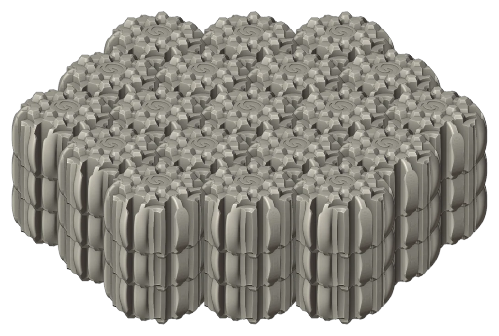

Building blocks for a rising sea.
SeaBrick is a hexagonal, interlocking, buoyant brick, and a nonprofit research programme to turn it into floating infrastructure that coastal communities can build themselves: docks, platforms, breakwaters and the foundations of buildings that rise with the water instead of fighting it.
Research in progress. Material performance and marine durability are being tested; nothing on this site is a product specification.

The coast is moving. Infrastructure should be able to move with it.
Sea level is rising, storms are stronger and the structures we have built along the shore were designed for a sea that stayed put. Floating infrastructure adapts by definition. Built from low-carbon materials, it can also help with the cause.
Adapt
Platforms, docks and foundations that float rise with the tide and the decade. Communities can add, move and repair them without heavy equipment or deep foundations.
Mitigate
Concrete and steel in the sea carry a large carbon cost. SeaBrick's materials strategy aims far below that, using mineral binders and plant fibre instead of Portland cement.
Open
SeaBrick Society is a nonprofit. Its job is the standard and the public record of what works, so that anyone can build with the system and improve it.
One small shape, many large structures.
A SeaBrick is a hexagonal brick roughly one and a half times as wide as it is tall, light enough to float and shaped to lock to its six neighbours and to the courses above and below. Lay bricks flat and you get a mat. Stack rings and you get a tube or a tower. Add bridging bricks and the courses tie together. Run cables through the stack and the whole thing behaves as one body.
The technology page explains the brick and its family of shapes, and an interactive builder lets you assemble mats, tubes and towers from the real design model.

Watch a mat go together
Nineteen bricks to a course, three courses, each course offset so that it bridges the joints below.
Marks of progress
Five years of research, told one milestone at a time.

Mineral foam and fibre: where the materials strategy stands
The current SeaBrick material is a light mineral-composite core inside a denser mineral shell, reinforced with short plant fibres. Here is the thinking, and the open questions.

An afternoon with a thousand bricks
On 13 June 2026 a small group of friends, advisors and one very focused four-year-old spent an afternoon building with about a thousand printed model bricks. It was the first time the whole family of shapes had been in one room.

The shape of a brick
Five years, twenty-odd versions and a few thousand 3D prints: how the SeaBrick went from a square slab to a hexagonal system brick.
A nonprofit built to set standards, not to sell bricks.
SeaBrick Society was incorporated under the Canada Not-for-profit Corporations Act in February 2022. It holds the research direction, the public record and the standards work. It does not sell products, take investment or pay dividends.